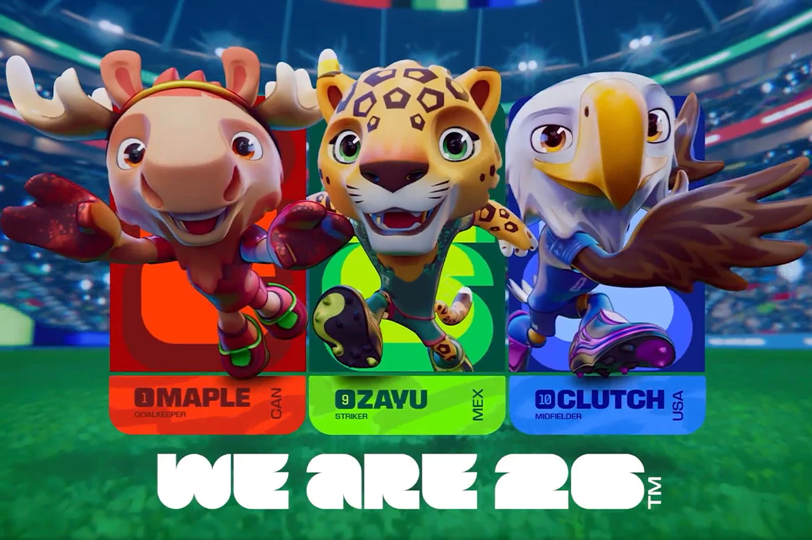

EXPECTATIVA VS REALIDADE?

EXPECTATIVA VS REALIDADE?
Mesmo após a classificação para o mata-mata na Copa Do Mundo, a Espanha e outras seleções Europeias, tinham que ralar para conseguir as vitórias.
Na primeira Fase de Grupos, a seleção espanhola enfrentou Cabo Verde, fechando em um empate de 0x0 lendário, dando um protagonismo para Vozinha – goleiro da seleção cabo verdiana.
Ainda no grupo H, Cabo Verde e Uruguai se enfrentaram, porém não teve tanta sorte em comparação a partida anterior, fechando a partida a 2x2; com os gols de Maximiliano Araújo (44’) e Agustin Canobbio (45+6’) para a seleção uruguaia e Kevin Pina (21’) e Hélio Varela (61’) para os verdianos.
Causando uma surpresa em todos e fazerem com que uma dúvida genuína surgisse: será que os favoritos irão cair?
Já a Arábia Saudita foi confiante contra o Uruguai, conseguindo um empate (1x1), mas que não foi igual contra a Espanha, perdendo de 4x0. Contra Cabo Verde, empate novamente de 0x0.
O futuro é imprevisível... O futebol também.
Nas 32ª rodadas, as surpresas vieram fortes.
Alemanha, a seleção tretacampeã, empatou com Paraguai. Contudo, mesmo nas prorrogações não tiveram o gol que necessitava da vitória, o jeito? Pênaltis. A surpresa? Perder de 4x3 para a seleção paraguaia.
O sentimento de vingança da Copa de 2014 estava finalmente se estabelecendo entre os brasileiros.
Mesmo com muita luta e suor, Senegal não foi párea para a seleção da Bélgica, perdendo de 3x2 nas prorrogações.
Apontada como outra favorita, Austrália empatou com Egito, que seguiu para os pênaltis e caiu, sendo derrotado de 4 a 2.
Na última sexta-feira (3), Argentina e Cabo Verde se enfrentaram. Com um drama de aguentar empate durante todos os 90 minutos, a prorrogação fez Argentina apertar a equipe adversária, vencendo de 3x2.
As oitavas de final vieram com mais surpresas e decepções.
Canadá enfrentou Marrocos em casa, porém, a seleção marroquina dominou a partida e eliminou um dos países anfitriões por 3x0.
Já o resultado mais decepcionante, sem dúvidas, foi o Brasil contra a Noruega: a derrota de 2x1. Brasil, mesmo sendo a favorita para ganhar a Copa e conquistar o hexa, foi surpreendido por dois gols no final, um pênalti fora e com a repetição de um trauma histórico da Copa de 1998.